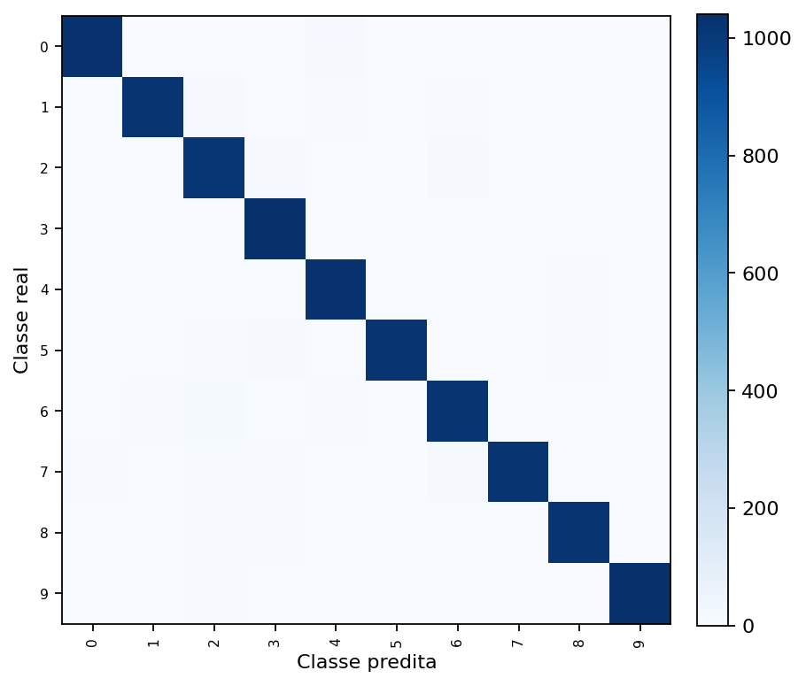
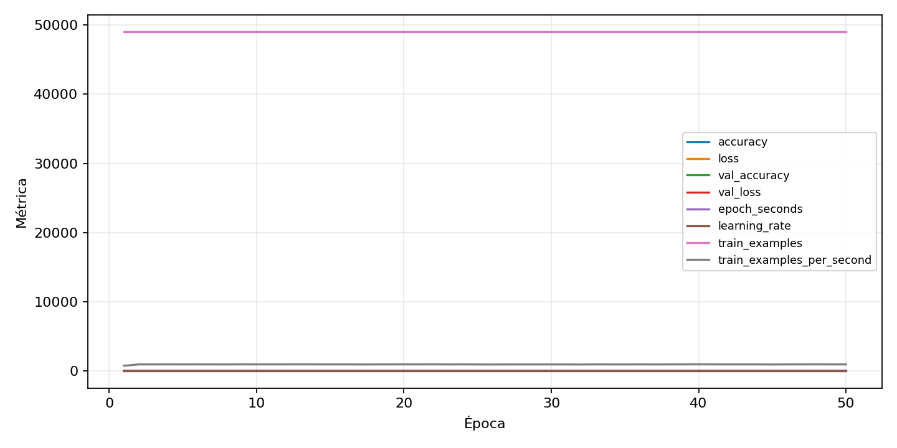

| n_samples | 10500 |
|---|---|
| loss | 0.13579273223876953 |
| accuracy | 0.9757142857142858 |
| balanced_accuracy | 0.9757142857142858 |
| macro_f1 | 0.975745045164833 |


| Índice | Classe | Suporte | Precisão | Recall | F1 |
|---|---|---|---|---|---|
| 0 | 0 | 1050 | 0.9856459330143541 | 0.9809523809523809 | 0.9832935560859187 |
| 1 | 1 | 1050 | 0.9845410628019323 | 0.9704761904761905 | 0.9774580335731415 |
| 2 | 2 | 1050 | 0.9485981308411215 | 0.9666666666666667 | 0.9575471698113207 |
| 3 | 3 | 1050 | 0.9629972247918593 | 0.9914285714285714 | 0.9770061004223369 |
| 4 | 4 | 1050 | 0.9662288930581614 | 0.9809523809523809 | 0.9735349716446124 |
| 5 | 5 | 1050 | 0.9902723735408561 | 0.9695238095238096 | 0.9797882579403273 |
| 6 | 6 | 1050 | 0.9648956356736242 | 0.9685714285714285 | 0.9667300380228138 |
| 7 | 7 | 1050 | 0.9893307468477207 | 0.9714285714285714 | 0.980297933685728 |
| 8 | 8 | 1050 | 0.9826756496631376 | 0.9723809523809523 | 0.9775011967448539 |
| 9 | 9 | 1050 | 0.9838249286393911 | 0.9847619047619047 | 0.9842931937172775 |
{"adapter":"kmnist","balance_mode":"all_raw","class_names":["0","1","2","3","4","5","6","7","8","9"],"dataset":"kmnist","dataset_options":{},"dataset_root":"/home/msduda/datasets-tcc/kmnist","native_channels":1,"normalization":"unit_interval","num_classes":10,"protocol":{"checkpoint_monitor":"val_macro_f1","dtype_policy":"mixed_float16","early_stopping":{"patience":50,"restore_best_weights":true},"evaluation_augmentation":false,"input_channels":"native","optimizer":"Adam","pretrained_weights":false,"reduce_lr_on_plateau":{"factor":0.3,"min_lr":1e-07,"patience":50},"resize":"proportional_padding","test_time_augmentation":false,"training_from_scratch":true},"seed":42,"source_fingerprint":"8928d478d8d23938a73b4f4a92c407bf3d74beff1e0e67e3644d6ecdc30cf828","source_manifest":{"class_names":["0","1","2","3","4","5","6","7","8","9"],"joined_samples":70000,"metadata":{"layout":"kmnist-component-npz"},"name":"kmnist","native_channels":1,"source_path":"/home/msduda/datasets-tcc/kmnist","splits":{"test":10000,"train":60000},"target_size":64},"target_size":64,"test_fraction":0.15,"train_fraction":0.7,"training":{"augmentation":{"brightness_delta":0.0,"contrast_lower":1.0,"contrast_upper":1.0,"cutout_max_frac":0.0,"cutout_prob":0.0,"flip_lr":false,"noise_std":0.0,"translate_frac":0.0,"zoom_max":1.0,"zoom_min":1.0},"batch_size":480,"default_image_size":64,"dtype_policy":"mixed_float16","early_stopping_patience":50,"extra_fraction":0.0,"image_size_overrides":{"gtsrb":128},"keras_verbose":1,"learning_rate":0.0003,"max_epochs":50,"preprocess_cache_max_mib":0,"reduce_lr_factor":0.3,"reduce_lr_min_lr":1e-07,"reduce_lr_patience":50,"shuffle_buffer_max_mib":0},"validation_fraction":0.15}
{"epochs_completed":50,"epochs_recorded":50,"evaluation_seconds":17.984953882005357,"fit_seconds_current_attempt":3058.374761896004,"max_epoch_seconds":64.22903128399776,"max_epochs":50,"mean_epoch_seconds":51.54732461571999,"mean_train_examples_per_second":951.5653116589386,"median_train_examples_per_second":956.5200991340146,"min_epoch_seconds":50.67543112899875,"selected_checkpoint":"/mnt/e/tcc-benchmark/outputs/kmnist-alldata-noaug-batch-sweep-2026-08-06/batch-480/kmnist/runs/kmnist__unit_interval__all_raw__seed-42/checkpoints/best.keras","total_seconds":2577.3662307859995,"training_seconds":2577.3662307859995,"wall_seconds_current_attempt":3079.978616332999}
{"elapsed_seconds":3080.0273889299933,"event_counts":{"data_preparation_end":1,"data_preparation_start":1,"epoch_end":50,"evaluation_end":1,"evaluation_start":1,"fit_end":1,"fit_start":1,"periodic":607,"run_completed":1,"train_start":1},"generated_at":"2026-08-08T09:46:25.043+00:00","gpu_backend":"pynvml","interval_seconds":5.0,"metrics":{"cpu_percent":{"count":665,"max":21.8,"mean":13.12796992481203,"min":0.0,"p50":13.5,"p95":16.3},"disk_data_free_bytes":{"count":665,"max":998270824448.0,"mean":998270760938.4421,"min":998270304256.0,"p50":998270763008.0,"p95":998270763008.0},"disk_data_percent":{"count":665,"max":2.7,"mean":2.7,"min":2.7,"p50":2.7,"p95":2.7},"disk_data_total_bytes":{"count":665,"max":1081101176832.0,"mean":1081101176832.0,"min":1081101176832.0,"p50":1081101176832.0,"p95":1081101176832.0},"disk_data_used_bytes":{"count":665,"max":27838517248.0,"mean":27838060565.557896,"min":27837997056.0,"p50":27838058496.0,"p95":27838062592.0},"disk_output_free_bytes":{"count":665,"max":207046725632.0,"mean":207033920876.94437,"min":207032860672.0,"p50":207033712640.0,"p95":207033958400.0},"disk_output_percent":{"count":665,"max":79.3,"mean":79.3,"min":79.3,"p50":79.3,"p95":79.3},"disk_output_total_bytes":{"count":665,"max":1000186310656.0,"mean":1000186310656.0,"min":1000186310656.0,"p50":1000186310656.0,"p95":1000186310656.0},"disk_output_used_bytes":{"count":665,"max":793153449984.0,"mean":793152389779.0557,"min":793139585024.0,"p50":793152598016.0,"p95":793153363968.0},"elapsed_seconds":{"count":665,"max":3079.970039,"mean":1542.5156408706766,"min":0.025683,"p50":1540.407561,"p95":2939.1106882000004},"gpu_count":{"count":665,"max":1.0,"mean":1.0,"min":1.0,"p50":1.0,"p95":1.0},"gpu_memory_percent":{"count":665,"max":52.08568572998047,"mean":51.64913937561494,"min":38.01140785217285,"p50":51.958274841308594,"p95":51.958274841308594},"gpu_memory_total_bytes":{"count":665,"max":8589934592.0,"mean":8589934592.0,"min":8589934592.0,"p50":8589934592.0,"p95":8589934592.0},"gpu_memory_used_bytes":{"count":665,"max":4474126336.0,"mean":4436627289.69624,"min":3265155072.0,"p50":4463181824.0,"p95":4463181824.0},"gpu_temperature_c":{"count":665,"max":51.0,"mean":41.70827067669173,"min":38.0,"p50":41.0,"p95":49.0},"gpu_utilization_percent":{"count":665,"max":100.0,"mean":19.81954887218045,"min":1.0,"p50":10.0,"p95":61.0},"process_cpu_percent":{"count":665,"max":218.3,"mean":170.23097744360902,"min":0.0,"p50":178.7,"p95":210.8},"process_read_bytes":{"count":665,"max":10973184.0,"mean":10948398.580451127,"min":7933952.0,"p50":10973184.0,"p95":10973184.0},"process_rss_bytes":{"count":665,"max":3876454400.0,"mean":3731645764.908271,"min":1029468160.0,"p50":3838201856.0,"p95":3862679552.0},"process_vms_bytes":{"count":665,"max":48655364096.0,"mean":48385651821.32932,"min":39580274688.0,"p50":48505053184.0,"p95":48587206656.0},"process_write_bytes":{"count":665,"max":1146880.0,"mean":1132774.977443609,"min":4096.0,"p50":1146880.0,"p95":1146880.0},"ram_available_bytes":{"count":665,"max":15530958848.0,"mean":12990397841.900751,"min":12842274816.0,"p50":12883402752.0,"p95":13499599257.6},"ram_percent":{"count":665,"max":22.7,"mean":21.834736842105265,"min":6.5,"p50":22.5,"p95":22.7},"ram_total_bytes":{"count":665,"max":16619085824.0,"mean":16619085824.0,"min":16619085824.0,"p50":16619085824.0,"p95":16619085824.0},"ram_used_bytes":{"count":665,"max":3776811008.0,"mean":3628687982.099248,"min":1088126976.0,"p50":3735683072.0,"p95":3764881817.6}},"sample_count":665,"schema_version":1}